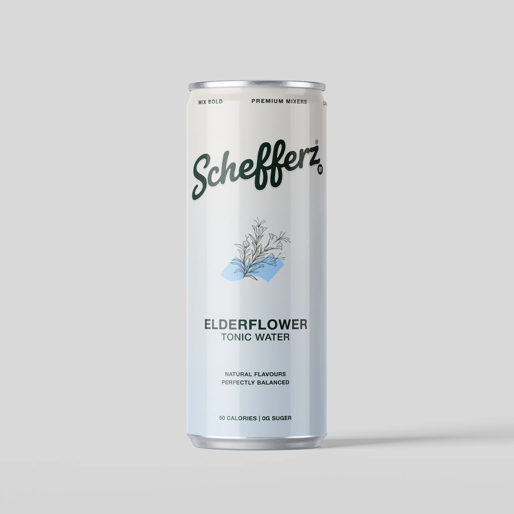
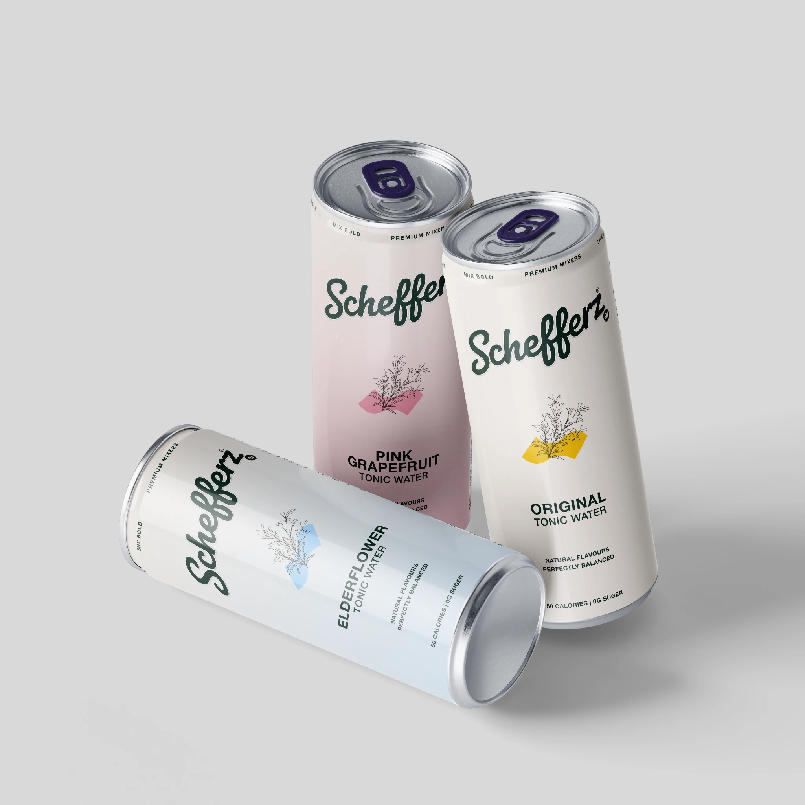

FLORAL & BRIGHT


SCHEFFERZ / THE FIRST COLLECTION
Elderflower Tonic Water
A floral expression with a softer visual character—made for slow pours, bright garnishes and thoughtful serves.
THE EXPRESSION
Tonic water with a distinctive flavour direction and a clean, considered visual identity.
01Serve your wayEnjoy chilled, on its own or as part of a favourite serve.
02Designed to mixPair with your preferred garnish and glassware.
PRE-LAUNCH
Available soon
We’re getting this flavour ready for its first pour. Leave us a note and we’ll let you know when ordering opens.
Notify me ↗Product specifications, ingredients and nutrition information will be published once the final commercial label is confirmed.
A GOOD PLACE TO START
Make the first pour
your own.
Chill well. Choose a glass. Add a garnish if the mood takes you. The best serve is the one you enjoy.
Explore all flavours →